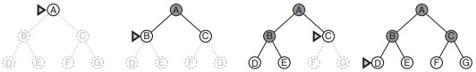
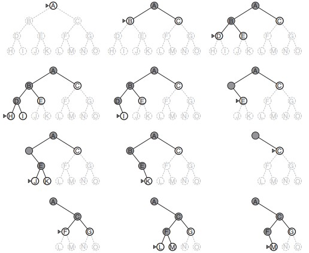
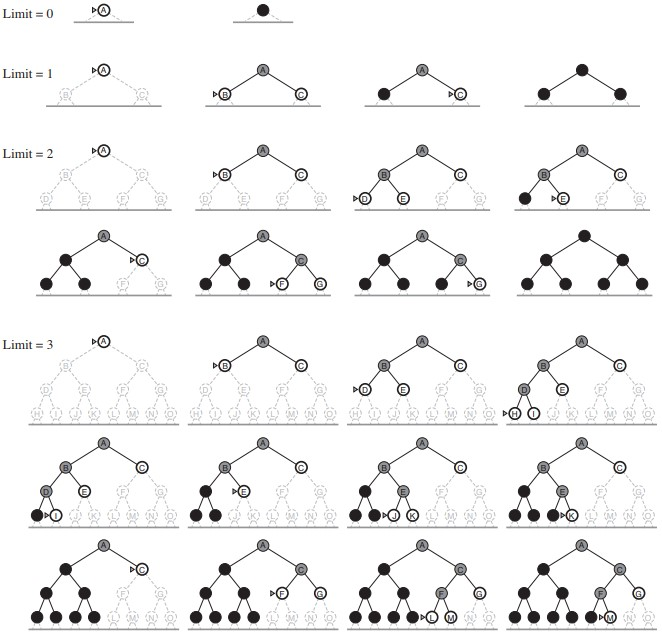
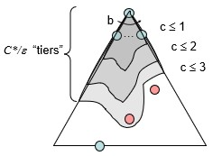

<!DOCTYPE html>
<html>
<head><meta name="generator" content="Hexo 3.8.0">
    <meta name="google-site-verification" content="Pq-mTDZK9AloZNLBSEURFJAoFEX6AeORZP_EjsTNxA8">
    <meta charset="utf-8">

    

    
    <title>Uninformed Search | Zequn&#39;s Blog</title>
    
    <meta name="viewport" content="width=device-width, initial-scale=1, maximum-scale=1">
    
        <meta name="keywords" content="AI">
    
    <meta name="description" content="Uninformed Search means agent doesn’t know how close a state is to the goal state.Strategies that know whether one non-goal state is “more promising” than another are called Informed Search or Heuris">
<meta name="keywords" content="AI">
<meta property="og:type" content="article">
<meta property="og:title" content="Uninformed Search">
<meta property="og:url" content="https://zequnsong.github.io/2019/05/02/Uninformed-Search/index.html">
<meta property="og:site_name" content="Zequn&#39;s Blog">
<meta property="og:description" content="Uninformed Search means agent doesn’t know how close a state is to the goal state.Strategies that know whether one non-goal state is “more promising” than another are called Informed Search or Heuris">
<meta property="og:locale" content="en">
<meta property="og:image" content="https://zequnsong.github.io/2019/05/02/Uninformed-Search/search.jpg">
<meta property="og:updated_time" content="2020-10-22T09:52:54.856Z">
<meta name="twitter:card" content="summary">
<meta name="twitter:title" content="Uninformed Search">
<meta name="twitter:description" content="Uninformed Search means agent doesn’t know how close a state is to the goal state.Strategies that know whether one non-goal state is “more promising” than another are called Informed Search or Heuris">
<meta name="twitter:image" content="https://zequnsong.github.io/2019/05/02/Uninformed-Search/search.jpg">
    

    
        <link rel="alternate" href="/atom.xml" title="Zequn&#39;s Blog" type="application/atom+xml">
    

    
        <link rel="icon" href="/css/images/favicon.ico">
    

    <link rel="stylesheet" href="/libs/font-awesome/css/font-awesome.min.css">
    <link rel="stylesheet" href="/libs/titillium-web/styles.css">
    <link rel="stylesheet" href="/libs/source-code-pro/styles.css">

    <link rel="stylesheet" href="/css/style.css">

    <script src="/libs/jquery/3.3.1/jquery.min.js"></script>
    
    
        <link rel="stylesheet" href="/libs/lightgallery/css/lightgallery.min.css">
    
    
        <link rel="stylesheet" href="/libs/justified-gallery/justifiedGallery.min.css">
    
    
    


</head>
</html>
<body>
    <div id="wrap">
        <header id="header">
    <div id="header-outer" class="outer">
        <div class="container">
            <div class="container-inner">
                <div id="header-title">
                    <h1 class="logo-wrap">
                        <a href="/" class="logo"></a>
                    </h1>
                    
                        <h2 class="subtitle-wrap">
                            <p class="subtitle">Stay hungry Stay Foolish</p>
                        </h2>
                    
                </div>
                <div id="header-inner" class="nav-container">
                    <a id="main-nav-toggle" class="nav-icon fa fa-bars"></a>
                    <div class="nav-container-inner">
                        <ul id="main-nav">
                            
                                <li class="main-nav-list-item">
                                    <a class="main-nav-list-link" href="/">Home</a>
                                </li>
                            
                                        <ul class="main-nav-list"><li class="main-nav-list-item"><a class="main-nav-list-link" href="/categories/Algorithm/">Algorithm</a></li><li class="main-nav-list-item"><a class="main-nav-list-link" href="/categories/Artificial-Intelligence/">Artificial Intelligence</a><ul class="main-nav-list-child"><li class="main-nav-list-item"><a class="main-nav-list-link" href="/categories/Artificial-Intelligence/Introduction-to-AI/">Introduction to AI</a></li><li class="main-nav-list-item"><a class="main-nav-list-link" href="/categories/Artificial-Intelligence/Uninformed-Informed-Search/">Uninformed & Informed Search</a></li></ul></li><li class="main-nav-list-item"><a class="main-nav-list-link" href="/categories/Hexo/">Hexo</a><ul class="main-nav-list-child"><li class="main-nav-list-item"><a class="main-nav-list-link" href="/categories/Hexo/Tag-Plugins/">Tag Plugins</a></li></ul></li></ul>
                                    
                                <li class="main-nav-list-item">
                                    <a class="main-nav-list-link" href="/about/index.html">About</a>
                                </li>
                            
                        </ul>
                        <nav id="sub-nav">
                            <div id="search-form-wrap">

    <form class="search-form">
        <input type="text" class="ins-search-input search-form-input" placeholder="Search">
        <button type="submit" class="search-form-submit"></button>
    </form>
    <div class="ins-search">
    <div class="ins-search-mask"></div>
    <div class="ins-search-container">
        <div class="ins-input-wrapper">
            <input type="text" class="ins-search-input" placeholder="Type something...">
            <span class="ins-close ins-selectable"><i class="fa fa-times-circle"></i></span>
        </div>
        <div class="ins-section-wrapper">
            <div class="ins-section-container"></div>
        </div>
    </div>
</div>
<script>
(function (window) {
    var INSIGHT_CONFIG = {
        TRANSLATION: {
            POSTS: 'Posts',
            PAGES: 'Pages',
            CATEGORIES: 'Categories',
            TAGS: 'Tags',
            UNTITLED: '(Untitled)',
        },
        ROOT_URL: '/',
        CONTENT_URL: '/content.json',
    };
    window.INSIGHT_CONFIG = INSIGHT_CONFIG;
})(window);
</script>
<script src="/js/insight.js"></script>

</div>
                        </nav>
                    </div>
                </div>
            </div>
        </div>
    </div>
</header>
        <div class="container">
            <div class="main-body container-inner">
                <div class="main-body-inner">
                    <section id="main">
                        <div class="main-body-header">
    <h1 class="header">
    
    <a class="page-title-link" href="/categories/Artificial-Intelligence/">Artificial Intelligence</a><i class="icon fa fa-angle-right"></i><a class="page-title-link" href="/categories/Artificial-Intelligence/Uninformed-Informed-Search/">Uninformed & Informed Search</a>
    </h1>
</div>

                        <div class="main-body-content">
                            <article id="post-Uninformed-Search" class="article article-single article-type-post" itemscope itemprop="blogPost">
    <div class="article-inner">
        
            <header class="article-header">
                
    
        <h1 class="article-title" itemprop="name">
        Uninformed Search
        </h1>
    

            </header>
        
        
            <div class="article-meta">
                
    <div class="article-date">
        <a href="/2019/05/02/Uninformed-Search/" class="article-date">
            <time datetime="2019-05-03T06:05:11.000Z" itemprop="datePublished">2019-05-03</time>
        </a>
    </div>

		

                
    <div class="article-tag">
        <i class="fa fa-tag"></i>
        <a class="tag-link" href="/tags/AI/">AI</a>
    </div>

                Views:<span id="/2019/05/02/Uninformed-Search/" class="leancloud_visitors" data-flag-title="Uninformed Search"></span>
            </div>
        
        
        <div class="article-entry" itemprop="articleBody">
            <hr>
<p>Uninformed Search means agent doesn’t know how close a state is to the goal state.<br>Strategies that know whether one non-goal state is “more promising” than another are called Informed Search or Heuristic Search strategies; they are covered in next article.</p>

<h4 id="Breadth-First-Search"><a href="#Breadth-First-Search" class="headerlink" title="Breadth-First Search"></a>Breadth-First Search</h4><p>The root node is expanded first, then all the successors of the root node are expanded next, then their successors, and so on. In general, all the nodes are expanded at a given depth in the search tree before any nodes at the next level are expanded.</p>
<p></p>
<p>Frontier: a FIFO queue</p>
<figure class="highlight matlab"><table><tr><td class="gutter"><pre><span class="line">1</span><br><span class="line">2</span><br><span class="line">3</span><br><span class="line">4</span><br><span class="line">5</span><br><span class="line">6</span><br><span class="line">7</span><br><span class="line">8</span><br><span class="line">9</span><br><span class="line">10</span><br><span class="line">11</span><br><span class="line">12</span><br><span class="line">13</span><br><span class="line">14</span><br><span class="line">15</span><br><span class="line">16</span><br></pre></td><td class="code"><pre><span class="line">//-----------------------BREADTH-FIRST-SEARCH--------------------------</span><br><span class="line"><span class="function"><span class="keyword">function</span> <span class="title">BREADTH</span>-<span class="title">FIRST</span>-<span class="title">SEARCH</span><span class="params">(problem)</span> <span class="title">returns</span> <span class="title">a</span> <span class="title">solution</span>, <span class="title">or</span> <span class="title">failure</span></span></span><br><span class="line">  node with STATE = problem.INITIAL-STATE, PATH-COST = <span class="number">0</span></span><br><span class="line">  <span class="keyword">if</span> problem.GOAL-TEST(node.STATE) then <span class="keyword">return</span> SOLUTION(node)</span><br><span class="line">  frontier = a FIFO queue with node as the only element</span><br><span class="line">  explored = an empty set</span><br><span class="line">  loop do</span><br><span class="line">    <span class="keyword">if</span> EMPTY?(frontier ) then <span class="keyword">return</span> failure</span><br><span class="line">    node = POP(frontier ) /* chooses the shallowest node in frontier */</span><br><span class="line">    add node.STATE to explored</span><br><span class="line">    <span class="keyword">for</span> each action in problem.ACTIONS(node.STATE) do</span><br><span class="line">      child = CHILD-NODE(problem, node, action)</span><br><span class="line">      <span class="keyword">if</span> child.STATE is not in explored or frontier then</span><br><span class="line">        //goal test is applied to each node when it is generated rather than when it is selected for expansion</span><br><span class="line">        <span class="keyword">if</span> problem.GOAL-TEST(child.STATE) then <span class="keyword">return</span> SOLUTION(child)</span><br><span class="line">        frontier = INSERT(child,frontier )</span><br></pre></td></tr></table></figure>
<p><strong>Evaluation</strong></p>
<ul>
<li><strong>Complete:</strong><br>If the shallowest goal node is at some finite depth d, breadth-first search will eventually find it after generating all shallower nodes (provided the branching factor b is finite).</li>
<li><strong>Not optimal:</strong><br>Only optimal when the path cost is a non-decreasing function of the depth of the node. The most common such scenario is that all actions have the same cost.</li>
<li><strong>Time complexity:</strong><br>Imagine branching factor is $b$ (each state has $b$ successors).<br>The root generates $b$ nodes at the first level.<br>Each of these generates $b$ more nodes, for a total of $b^2$ at the second level.<br>Each of these generates $b$ more nodes, yielding $b^3$ nodes at the third level, and so on.<br>Suppose that the solution is at depth $s$.<br>$$<br>b + b^2 + b^3 + ··· + b^s = O(b^s)<br>$$</li>
</ul>

<center><font color="#afaaaa" size="4">BFS</font></center>

<ul>
<li><strong>Space complexity:</strong><br>There will be $O(b^{s−1})$ nodes in the explored set and $O(b^s)$ nodes in the frontier.</li>
</ul>
<h4 id="Depth-First-Search"><a href="#Depth-First-Search" class="headerlink" title="Depth-First Search"></a>Depth-First Search</h4><p>Always expands the deepest node in the current frontier of the search tree. The search proceeds immediately to the deepest level of the search tree, where the nodes have no successors. As those nodes are expanded, they are dropped from the frontier, so then the search “backs up” to the next deepest node that still has unexplored successors</p>
<p></p>
<p>Frontier: a LIFO queue</p>
<p><strong>Evaluation</strong></p>
<p>The properties of DFS strongly on whether the graph-search or tree-search version is used</p>
<ul>
<li><strong>Complete:</strong><br>Complete by graph-search if finite state space.<br>Not Complete by treee-search, maybe follow the loop forever.</li>
<li><strong>Not optimal:</strong><br>Return the leftmost solution.</li>
<li><strong>Time complexity:</strong><br>Imagine branching factor is $b$.<br>Suppose that maximum depth is $m$.<br>Therefore, time complexity is $O(b^m)$, bigger than BFS.<br>In tree search version, $m$ may be much larger than $d$ (the depth of shallowest solution).</li>
</ul>

<center><font color="#afaaaa" size="4">DFS</font></center>

<ul>
<li><strong>Space complexity:</strong><br>Only needs to store a single path from the root to a leaf node, along with the remaining unexpanded sibling nodes for each node on the path. Once a node has been expanded, it can be removed from memory as soon as all its descendants have been fully explored.<br>Therefore, DFS requires storage of only $O(bm)$ nodes. (if not use explored set)</li>
</ul>
<h4 id="Depth-Limited-Search"><a href="#Depth-Limited-Search" class="headerlink" title="Depth Limited Search"></a>Depth Limited Search</h4><p>The embarrassing failure of DFS in infinite state spaces can be alleviated by supplying DFS with a predetermined depth limit $l$. That is, nodes at depth $l$ are treated as if they have no successors.<br>DFS can be viewed as a special case of depth-limited search with $l=d$.</p>
<p><strong>Evaluation</strong></p>
<ul>
<li><strong>Not Complete:</strong> $l$ can be smaller than $s$.</li>
<li><strong>Not optimal:</strong> $l$ can be bigger than $d$.</li>
<li><strong>Time complexity:</strong> $O(b^l)$</li>
<li><strong>Space complexity:</strong> $O(bl)$</li>
</ul>
<h4 id="Iterative-Deepening-Search"><a href="#Iterative-Deepening-Search" class="headerlink" title="Iterative Deepening Search"></a>Iterative Deepening Search</h4><p>Get DFS’s space advantage with BFS’s time advantage. Repeat the DFS by gradually increasing the depth limit, until a goal is found.</p>
<figure class="highlight"><table><tr><td class="gutter"><pre><span class="line">1</span><br><span class="line">2</span><br><span class="line">3</span><br><span class="line">4</span><br><span class="line">5</span><br><span class="line">6</span><br></pre></td><td class="code"><pre><span class="line">//-----------------------BREADTH-FIRST-SEARCH--------------------------</span><br><span class="line"><span class="function"><span class="keyword">function</span> <span class="title">ITERATIVE</span>-<span class="title">DEEPENING</span>-<span class="title">SEARCH</span><span class="params">(problem)</span> <span class="title">returns</span> <span class="title">a</span> <span class="title">solution</span>, <span class="title">or</span> <span class="title">failure</span></span></span><br><span class="line">  <span class="keyword">for</span> depth = <span class="number">0</span> to ∞ do</span><br><span class="line">    result ← DEPTH-LIMITED-SEARCH(problem, depth)</span><br><span class="line">    <span class="keyword">if</span> result != cutoff then <span class="keyword">return</span> result </span><br><span class="line">    //the cutoff value indicates no solution within the depth limit.</span><br></pre></td></tr></table></figure>
<p>Limit 0 is root node.<br>Run a DFS with depth limit 1. If no solution…<br>Run a DFS with depth limit 2. If no solution…<br>Run a DFS with depth limit 3. …</p>
<p></p>
<p><strong>Evaluation</strong></p>
<ul>
<li><strong>Complete:</strong> same as BFS</li>
<li><strong>Not optimal:</strong> same as BFS</li>
<li><strong>Time complexity:</strong> $O(b^s)$<br>asymptotically the same as BFS<br>There is some extra cost for generating the upper levels multiple times, but it is not large.<br>For example, if $b = 10$ and $s = 5$, the numbers are<br>$N(IDS) = 50 + 400 + 3000 + 20000 + 100000 = 123450$<br>$N(BFS) = 10 + 100 + 1000 + 10000 + 100000 = 111110$</li>
<li><strong>Space complexity:</strong> $O(bs)$</li>
</ul>
<h4 id="Uniform-Cost-Search"><a href="#Uniform-Cost-Search" class="headerlink" title="Uniform Cost Search"></a>Uniform Cost Search</h4><p>BFS is only optima with non-decreasing cost function.<br>But UCS can find the least-cost(optimal) path with any step-cost function.<br>Instead of expanding the shallowest node, UCS expands the node n with the lowest $g(n)$ (which is path cost).</p>
<p>There are two other significant differences from breadth-first search. </p>
<ul>
<li>The first is that the goal test is applied to a node when it is selected for expansion rather than when it is first generated. The reason is that the first goal node that is generated may be on a suboptimal path. </li>
<li>The second difference is that a test is added in the end in case a better path is found to a node currently on the frontier</li>
</ul>
<p>Frontier: a priority queue (ordered by cumulative cost g(n))</p>
<figure class="highlight matlab"><table><tr><td class="gutter"><pre><span class="line">1</span><br><span class="line">2</span><br><span class="line">3</span><br><span class="line">4</span><br><span class="line">5</span><br><span class="line">6</span><br><span class="line">7</span><br><span class="line">8</span><br><span class="line">9</span><br><span class="line">10</span><br><span class="line">11</span><br><span class="line">12</span><br><span class="line">13</span><br><span class="line">14</span><br><span class="line">15</span><br><span class="line">16</span><br></pre></td><td class="code"><pre><span class="line">//----------------------- UNIFORM-COST-SEARCH--------------------------</span><br><span class="line"><span class="function"><span class="keyword">function</span> <span class="title">UNIFORM</span>-<span class="title">COST</span>-<span class="title">SEARCH</span><span class="params">(problem)</span> <span class="title">returns</span> <span class="title">a</span> <span class="title">solution</span>, <span class="title">or</span> <span class="title">failure</span></span></span><br><span class="line">  node with STATE = problem.INITIAL-STATE, PATH-COST = <span class="number">0</span></span><br><span class="line">  frontier = a priority queue ordered by PATH-COST, with node as the only element</span><br><span class="line">  explored = an empty set</span><br><span class="line">  loop do</span><br><span class="line">    <span class="keyword">if</span> EMPTY?(frontier ) then <span class="keyword">return</span> failure</span><br><span class="line">    node = POP(frontier ) /* chooses the lowest-cost node in frontier */</span><br><span class="line">    if problem.GOAL-TEST(node.STATE) then return SOLUTION(node) //different goaltest location</span><br><span class="line">    add node.STATE to explored</span><br><span class="line">    <span class="keyword">for</span> each action in problem.ACTIONS(node.STATE) do</span><br><span class="line">      child = CHILD-NODE(problem, node, action)</span><br><span class="line">      <span class="keyword">if</span> child.STATE is not in explored or frontier then</span><br><span class="line">        frontier ← INSERT(child,frontier )</span><br><span class="line">      <span class="keyword">else</span> <span class="keyword">if</span> child.STATE is in frontier with higher PATH-COST then</span><br><span class="line">        replace that frontier node with child</span><br></pre></td></tr></table></figure>
<h6 id="Example"><a href="#Example" class="headerlink" title="Example"></a>Example</h6><p></p>
<p>The goal is to get from Sibiu to Bucharest.<br>Frontier={ Sibiu-0 }</p>
<p>The successors of Sibiu are Rimnicu Vilcea and Fagaras, with costs 80 and 99, respectively.<br>Frontier={ Rimnicu Vilcea-80, Fagaras-99 }</p>
<p>The least-cost node, Rimnicu Vilcea, is expanded.adding Pitesti with cost 80 + 97 = 177.<br>Frontier={ Fagaras-99, Pitesti-177 }</p>
<p>The least-cost node is now Fagaras, so it is expanded, adding Bucharest with cost 99 + 211 = 310.<br>Frontier={ Pitesti-177, Bucharest-310 }</p>
<p>Now a goal node has been generated, but UCS keeps going, no goal test now.<br>Choosing Pitesti for expansion and adding a second path to Bucharest with cost 80+ 97+ 101 = 278.<br>Frontier={ Bucharest(2)-278, Bucharest(1)-310 }</p>
<p>Choosing Bucharest(2), goal test now, the node to expand is goal state Bucharest with g-cost 278, the solution is returned.</p>
<p><strong>Evaluation</strong><br>UCS is guided by path costs rather than depths, so its complexity is not easily characterized in terms of $b$ and $d$.<br>Define some new variables:<br>$C^*$ is the cost for the optimal plan that reach the goal.<br>$\epsilon$ is the minimum cost for each action<br>Therefore, we will go at most $C^*/\epsilon$ deep.</p>
<p></p>
<ul>
<li><strong>Complete:</strong><br>As long as there is a lower bound of the cost of each action ($\epsilon$ exist and $\epsilon&gt;0$)<br>UCS is a generalization of Breadth First Search in the sense that it takes costs of each edge into account. </li>
<li><strong>Optimal:</strong><br>Whenever UCS selects a node n for expansion, the optimal path to that node has been found, because our expand strategy is expands the node with the lowest path cost g(n)<br>Then, because step costs are non-negative, paths never get shorter as nodes are added.<br>These two facts together imply that UCS expands nodes in order of their optimal path cost.<br>Hence, the first goal node selected for expansion must be the optimal solution.</li>
<li><strong>Time complexity:</strong> $O(b^{C^*/\epsilon})$<br>Longer than BFS. BFS stops as soon as it generates a goal, whereas UCS examines all the nodes at the goal’s depth to see if one has a lower cost; thus UCS does strictly more work by expanding nodes at depth d unnecessarily.</li>
<li><strong>Space complexity:</strong> $O(b^{C^*/\epsilon})$  roughly the last tier</li>
</ul>
<p>Conceptually, all the search algorithms above are the same except for frontier strategies, and all frontier are priority queues (priority means strategy).</p>

        </div>
        <footer class="article-footer">
            


    <a data-url="https://zequnsong.github.io/2019/05/02/Uninformed-Search/" data-id="ckgkkmesn000rf4dzzscm7m01" class="article-share-link"><i class="fa fa-share"></i>Share</a>
<script>
    (function ($) {
        $('body').on('click', function() {
            $('.article-share-box.on').removeClass('on');
        }).on('click', '.article-share-link', function(e) {
            e.stopPropagation();

            var $this = $(this),
                url = $this.attr('data-url'),
                encodedUrl = encodeURIComponent(url),
                id = 'article-share-box-' + $this.attr('data-id'),
                offset = $this.offset(),
                box;

            if ($('#' + id).length) {
                box = $('#' + id);

                if (box.hasClass('on')){
                    box.removeClass('on');
                    return;
                }
            } else {
                var html = [
                    '<div id="' + id + '" class="article-share-box">',
                        '<input class="article-share-input" value="' + url + '">',
                        '<div class="article-share-links">',
                            '<a href="https://twitter.com/intent/tweet?url=' + encodedUrl + '" class="article-share-twitter" target="_blank" title="Twitter"></a>',
                            '<a href="https://www.facebook.com/sharer.php?u=' + encodedUrl + '" class="article-share-facebook" target="_blank" title="Facebook"></a>',
                            '<a href="http://pinterest.com/pin/create/button/?url=' + encodedUrl + '" class="article-share-pinterest" target="_blank" title="Pinterest"></a>',
                            '<a href="https://plus.google.com/share?url=' + encodedUrl + '" class="article-share-google" target="_blank" title="Google+"></a>',
                        '</div>',
                    '</div>'
                ].join('');

              box = $(html);

              $('body').append(box);
            }

            $('.article-share-box.on').hide();

            box.css({
                top: offset.top + 25,
                left: offset.left
            }).addClass('on');

        }).on('click', '.article-share-box', function (e) {
            e.stopPropagation();
        }).on('click', '.article-share-box-input', function () {
            $(this).select();
        }).on('click', '.article-share-box-link', function (e) {
            e.preventDefault();
            e.stopPropagation();

            window.open(this.href, 'article-share-box-window-' + Date.now(), 'width=500,height=450');
        });
    })(jQuery);
</script>

        </footer>
    </div>
    <script type="application/ld+json">
    {
        "@context": "https://schema.org",
        "@type": "BlogPosting",
        "author": {
            "@type": "Person",
            "name": "Zequn Song"
        },
        "headline": "Uninformed Search",
        "image": "https://zequnsong.github.io/2019/05/02/Uninformed-Search/search.jpg",
        "keywords": "AI",
        "genre": "Artificial Intelligence Uninformed & Informed Search",
        "datePublished": "2019-05-03",
        "dateCreated": "2019-05-03",
        "dateModified": "2020-10-22",
        "url": "https://zequnsong.github.io/2019/05/02/Uninformed-Search/",
        "description": "
Uninformed Search means agent doesn’t know how close a state is to the goal state.Strategies that know whether one non-goal state is “more promising” than another are called Informed Search or Heuris"
        "wordCount": 1655
    }
</script>

</article>

    <section id="comments">
    
        
    <div id="lv-container" data-id="city" data-uid="MTAyMC80Mzk0Ni8yMDQ4Mg=="></div>

    
    </section>


                        </div>
                    </section>
                    <aside id="sidebar">
    <a class="sidebar-toggle" title="Expand Sidebar"><i class="toggle icon"></i></a>
    <div class="sidebar-top">
        <p>follow:</p>
        <ul class="social-links">
            
                
                <li>
                    <a class="social-tooltip" title="github" href="https://github.com/ZequnSong" target="_blank" rel="noopener">
                        <i class="icon fa fa-github"></i>
                    </a>
                </li>
                
            
                
                <li>
                    <a class="social-tooltip" title="linkedin" href="https://www.linkedin.com/in/zequnsong/" target="_blank" rel="noopener">
                        <i class="icon fa fa-linkedin"></i>
                    </a>
                </li>
                
            
                
                <li>
                    <a class="social-tooltip" title="twitter" href="https://twitter.com/Zequn_S" target="_blank" rel="noopener">
                        <i class="icon fa fa-twitter"></i>
                    </a>
                </li>
                
            
                
                <li>
                    <a class="social-tooltip" title="facebook" href="https://www.facebook.com/zequn.song.754" target="_blank" rel="noopener">
                        <i class="icon fa fa-facebook"></i>
                    </a>
                </li>
                
            
                
                <li>
                    <a class="social-tooltip" title="rss" href="/atom.xml" target="_blank" rel="noopener">
                        <i class="icon fa fa-rss"></i>
                    </a>
                </li>
                
            
        </ul>
    </div>
    
        
<nav id="article-nav">
    
        <a href="/2020/10/21/Binary-Search/" id="article-nav-newer" class="article-nav-link-wrap">
        <strong class="article-nav-caption">newer</strong>
        <p class="article-nav-title">
        
            Binary Search
        
        </p>
        <i class="icon fa fa-chevron-right" id="icon-chevron-right"></i>
    </a>
    
    
        <a href="/2019/04/27/Tree-Search/" id="article-nav-older" class="article-nav-link-wrap">
        <strong class="article-nav-caption">older</strong>
        <p class="article-nav-title">Tree Search</p>
        <i class="icon fa fa-chevron-left" id="icon-chevron-left"></i>
        </a>
    
</nav>

    
    <div class="widgets-container">
        
            
                

            
                
    <div class="widget-wrap">
        <h3 class="widget-title">recents</h3>
        <div class="widget">
            <ul id="recent-post" class>
                
                    <li>
                        
                        <div class="item-thumbnail">
                            <a href="/2020/10/22/hexoproj/" class="thumbnail">
    
    
        <span class="thumbnail-image thumbnail-none"></span>
    
    
</a>

                        </div>
                        
                        <div class="item-inner">
                            <p class="item-category"></p>
                            <p class="item-title"><a href="/2020/10/22/hexoproj/" class="title"></a></p>
                            <p class="item-date"><time datetime="2020-10-22T09:36:07.344Z" itemprop="datePublished">2020-10-22</time></p>
                        </div>
                    </li>
                
                    <li>
                        
                        <div class="item-thumbnail">
                            <a href="/2020/10/21/Binary-Search/" class="thumbnail">
    
    
        <span style="background-image:url(binary-search-cover.jpg)" alt="Binary Search" class="thumbnail-image"></span>
    
    
</a>

                        </div>
                        
                        <div class="item-inner">
                            <p class="item-category"><a class="article-category-link" href="/categories/Algorithm/">Algorithm</a></p>
                            <p class="item-title"><a href="/2020/10/21/Binary-Search/" class="title">Binary Search</a></p>
                            <p class="item-date"><time datetime="2020-10-22T05:26:34.000Z" itemprop="datePublished">2020-10-22</time></p>
                        </div>
                    </li>
                
                    <li>
                        
                        <div class="item-thumbnail">
                            <a href="/2019/05/02/Uninformed-Search/" class="thumbnail">
    
    
        <span style="background-image:url(/2019/05/02/Uninformed-Search/search.jpg)" alt="Uninformed Search" class="thumbnail-image"></span>
    
    
</a>

                        </div>
                        
                        <div class="item-inner">
                            <p class="item-category"><a class="article-category-link" href="/categories/Artificial-Intelligence/">Artificial Intelligence</a><i class="icon fa fa-angle-right"></i><a class="article-category-link" href="/categories/Artificial-Intelligence/Uninformed-Informed-Search/">Uninformed & Informed Search</a></p>
                            <p class="item-title"><a href="/2019/05/02/Uninformed-Search/" class="title">Uninformed Search</a></p>
                            <p class="item-date"><time datetime="2019-05-03T06:05:11.000Z" itemprop="datePublished">2019-05-03</time></p>
                        </div>
                    </li>
                
                    <li>
                        
                        <div class="item-thumbnail">
                            <a href="/2019/04/27/Tree-Search/" class="thumbnail">
    
    
        <span style="background-image:url(/2019/04/27/Tree-Search/mapOfRomania.jpg)" alt="Tree Search" class="thumbnail-image"></span>
    
    
</a>

                        </div>
                        
                        <div class="item-inner">
                            <p class="item-category"><a class="article-category-link" href="/categories/Artificial-Intelligence/">Artificial Intelligence</a><i class="icon fa fa-angle-right"></i><a class="article-category-link" href="/categories/Artificial-Intelligence/Uninformed-Informed-Search/">Uninformed & Informed Search</a></p>
                            <p class="item-title"><a href="/2019/04/27/Tree-Search/" class="title">Tree Search</a></p>
                            <p class="item-date"><time datetime="2019-04-28T06:37:58.000Z" itemprop="datePublished">2019-04-28</time></p>
                        </div>
                    </li>
                
                    <li>
                        
                        <div class="item-thumbnail">
                            <a href="/2019/04/27/Introduction-to-AI/" class="thumbnail">
    
    
        <span style="background-image:url(/2019/04/27/Introduction-to-AI/cover.png)" alt="Introduction to AI" class="thumbnail-image"></span>
    
    
</a>

                        </div>
                        
                        <div class="item-inner">
                            <p class="item-category"><a class="article-category-link" href="/categories/Artificial-Intelligence/">Artificial Intelligence</a><i class="icon fa fa-angle-right"></i><a class="article-category-link" href="/categories/Artificial-Intelligence/Introduction-to-AI/">Introduction to AI</a></p>
                            <p class="item-title"><a href="/2019/04/27/Introduction-to-AI/" class="title">Introduction to AI</a></p>
                            <p class="item-date"><time datetime="2019-04-28T06:09:22.000Z" itemprop="datePublished">2019-04-28</time></p>
                        </div>
                    </li>
                
            </ul>
        </div>
    </div>

            
                
    <div class="widget-wrap widget-list">
        <h3 class="widget-title">categories</h3>
        <div class="widget">
            <ul class="category-list"><li class="category-list-item"><a class="category-list-link" href="/categories/Algorithm/">Algorithm</a><span class="category-list-count">1</span></li><li class="category-list-item"><a class="category-list-link" href="/categories/Artificial-Intelligence/">Artificial Intelligence</a><span class="category-list-count">3</span><ul class="category-list-child"><li class="category-list-item"><a class="category-list-link" href="/categories/Artificial-Intelligence/Introduction-to-AI/">Introduction to AI</a><span class="category-list-count">1</span></li><li class="category-list-item"><a class="category-list-link" href="/categories/Artificial-Intelligence/Uninformed-Informed-Search/">Uninformed & Informed Search</a><span class="category-list-count">2</span></li></ul></li><li class="category-list-item"><a class="category-list-link" href="/categories/Hexo/">Hexo</a><span class="category-list-count">1</span><ul class="category-list-child"><li class="category-list-item"><a class="category-list-link" href="/categories/Hexo/Tag-Plugins/">Tag Plugins</a><span class="category-list-count">1</span></li></ul></li></ul>
        </div>
    </div>


            
                
    <div class="widget-wrap widget-list">
        <h3 class="widget-title">archives</h3>
        <div class="widget">
            <ul class="archive-list"><li class="archive-list-item"><a class="archive-list-link" href="/archives/2020/10/">October 2020</a><span class="archive-list-count">2</span></li><li class="archive-list-item"><a class="archive-list-link" href="/archives/2019/05/">May 2019</a><span class="archive-list-count">1</span></li><li class="archive-list-item"><a class="archive-list-link" href="/archives/2019/04/">April 2019</a><span class="archive-list-count">3</span></li></ul>
        </div>
    </div>


            
                
    <div class="widget-wrap widget-list">
        <h3 class="widget-title">tags</h3>
        <div class="widget">
            <ul class="tag-list"><li class="tag-list-item"><a class="tag-list-link" href="/tags/AI/">AI</a><span class="tag-list-count">3</span></li><li class="tag-list-item"><a class="tag-list-link" href="/tags/Binary-Search/">Binary Search</a><span class="tag-list-count">1</span></li><li class="tag-list-item"><a class="tag-list-link" href="/tags/二分法/">二分法</a><span class="tag-list-count">1</span></li></ul>
        </div>
    </div>


            
                
    <div class="widget-wrap widget-float">
        <h3 class="widget-title">tag cloud</h3>
        <div class="widget tagcloud">
            <a href="/tags/AI/" style="font-size: 20px;">AI</a> <a href="/tags/Binary-Search/" style="font-size: 10px;">Binary Search</a> <a href="/tags/二分法/" style="font-size: 10px;">二分法</a>
        </div>
    </div>


            
                
    <div class="widget-wrap widget-list">
        <h3 class="widget-title">links</h3>
        <div class="widget">
            <ul>
                
                    <li>
                        <a href="http://wonderingkaho.github.io">Kaho Lee</a>
                    </li>
                
            </ul>
        </div>
    </div>


            
        
    </div>
</aside>

                </div>
            </div>
        </div>
        <footer id="footer">
    <div class="container">
        <div class="container-inner">
            <a id="back-to-top" href="javascript:;"><i class="icon fa fa-angle-up"></i></a>
            <div class="credit">
                <h1 class="logo-wrap">
                    <a href="/" class="logo"></a>
                </h1>
                <p>&copy; 2020 Zequn Song</p>
                <p>Powered by <a href="//hexo.io/" target="_blank">Hexo</a>. Theme by <a href="//github.com/ppoffice" target="_blank">PPOffice</a></p>
                <span id="busuanzi_container_site_pv">Total View: <span id="busuanzi_value_site_pv"></span> &nbsp; </span>
                <span id="busuanzi_container_site_uv">Unique Visitor: <span id="busuanzi_value_site_uv"></span></span>
            </div>
            <div class="footer-plugins">
              
    


            </div>
        </div>
    </div>
</footer>
<!--��װ�����ӽű�-->
<script async src="//busuanzi.ibruce.info/busuanzi/2.3/busuanzi.pure.mini.js"></script>
<!--��װleanCloud-->
<script src="//cdn1.lncld.net/static/js/2.5.0/av-min.js"></script>
<script>
    var APP_ID = 'TmPlBi7KsQ7v8vIBX3LKD2sM-gzGzoHsz';
    var APP_KEY = 'EUauPtwUDhpzhOVi4HX8tNjD';
    AV.init({
        appId: APP_ID,
        appKey: APP_KEY
    });
    // ��ʾ����
    function showTime(Counter) {
        var query = new AV.Query("Counter");
        if($(".leancloud_visitors").length > 0){
            var url = $(".leancloud_visitors").attr('id').trim();
            // where field
            query.equalTo("words", url);
            // count
            query.count().then(function (number) {
                // There are number instances of MyClass where words equals url.
                $(document.getElementById(url)).text(number?  number : '--');
            }, function (error) {
                // error is an instance of AVError.
            });
        }
    }
    // ׷��pv
    function addCount(Counter) {
        var url = $(".leancloud_visitors").length > 0 ? $(".leancloud_visitors").attr('id').trim() : 'icafebolger.com';
        var Counter = AV.Object.extend("Counter");
        var query = new Counter;
        query.save({
            words: url
        }).then(function (object) {
        })
    }
    $(function () {
        var Counter = AV.Object.extend("Counter");
        addCount(Counter);
        showTime(Counter);
    });
</script>
        
    
    
    <!-- 来必力City版安装代码 -->
    <script type="text/javascript">
     (function(d, s) {
         var j, e = d.getElementsByTagName(s)[0];

         if (typeof LivereTower === 'function') { return; }

         j = d.createElement(s);
         j.src = 'https://cdn-city.livere.com/js/embed.dist.js';
         j.async = true;

         e.parentNode.insertBefore(j, e);
     })(document, 'script');
    </script>
  <noscript> 为正常使用来必力评论功能请激活JavaScript</noscript>
  <!-- City版安装代码已完成 -->


    
        <script src="/libs/lightgallery/js/lightgallery.min.js"></script>
        <script src="/libs/lightgallery/js/lg-thumbnail.min.js"></script>
        <script src="/libs/lightgallery/js/lg-pager.min.js"></script>
        <script src="/libs/lightgallery/js/lg-autoplay.min.js"></script>
        <script src="/libs/lightgallery/js/lg-fullscreen.min.js"></script>
        <script src="/libs/lightgallery/js/lg-zoom.min.js"></script>
        <script src="/libs/lightgallery/js/lg-hash.min.js"></script>
        <script src="/libs/lightgallery/js/lg-share.min.js"></script>
        <script src="/libs/lightgallery/js/lg-video.min.js"></script>
    
    
        <script src="/libs/justified-gallery/jquery.justifiedGallery.min.js"></script>
    
    
        <script type="text/x-mathjax-config">
            MathJax.Hub.Config({ tex2jax: { inlineMath: [['$','$'], ['\\(','\\)']] } });
        </script>
        <script src="https://cdnjs.cloudflare.com/ajax/libs/mathjax/2.7.1/MathJax.js?config=TeX-MML-AM_CHTML"></script>
    


<!-- Custom Scripts -->
<script src="/js/main.js"></script>

    </div>
</body>
</html>
